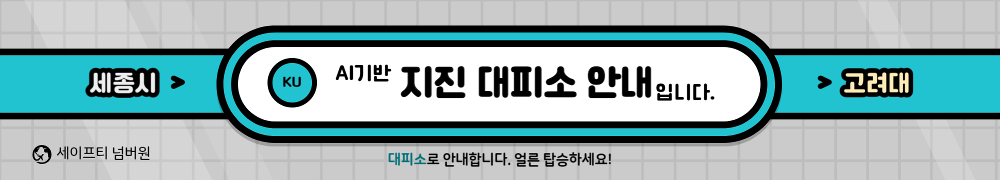
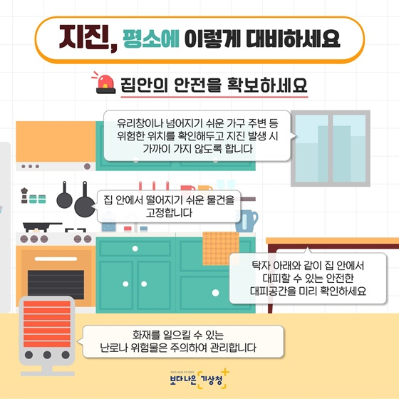
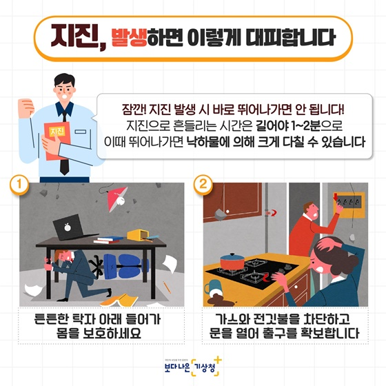

<!DOCTYPE html>
<html lang="ko">
<head>
  <meta charset="UTF-8">
  <title> 스마트시티 세이프티 넘버원</title>
  <style>
:root {
  --bg: #3C465C;
  --primary: #78FFCD;
  --solid: #fff;
  --btn-w: 10em;
  --dot-w: calc(var(--btn-w)*.2);
  --tr-X: calc(var(--btn-w) - var(--dot-w));
}
* {box-sizing: border-box;}
*:before, *:after {box-sizing: border-box;}

body {
  height: 100vh;
  display: flex;
  justify-content: center;
  align-items: center;
  flex-flow: wrap;
  background: var(--bg);
  font-size: 20px;
  font-family: 'Titillium Web', sans-serif;
}
h1 {
  color: var(--solid);
  font-size: 2.5rem;
  margin-top: 6rem; 
}
.btn {
  position: relative;
  margin: 0 auto;
  width: var(--btn-w);
  color: var(--primary);
  border: .15em solid var(--primary);
  border-radius: 5em;
  text-transform: uppercase;
  text-align: center;
  font-size: 1.3em;
  line-height: 2em;
  cursor: pointer;  
}
.dot {
  content: '';
  position: absolute;
  top: 0;
  width: var(--dot-w);
  height: 100%;
  border-radius: 100%;
  transition: all 300ms ease;
  display: none;
}
.dot:after {
  content: '';
  position: absolute;
  left: calc(50% - .4em);
  top: -.4em;
  height: .8em;
  width: .8em;
  background: var(--primary);
  border-radius: 1em;
  border: .25em solid var(--solid);
  box-shadow: 0 0 .7em var(--solid),
        0 0 2em var(--primary);
}
.btn:hover .dot,
.btn:focus .dot {
  animation: atom 2s infinite linear;
  display: block;
}
@keyframes atom {
  0% {transform: translateX(0) rotate(0);}
  30%{transform: translateX(var(--tr-X)) rotate(0);}
  50% {transform: translateX(var(--tr-X)) rotate(180deg);}
  80% {transform: translateX(0) rotate(180deg);}
  100% {transform: translateX(0) rotate(360deg);}
}
    nav{
    	font-size: 12pt;
    	font-family: 'PT Sans', Arial, Sans-serif;
    	position: relative;
    }
    nav ul{
    	padding: 0;
    	margin: 0 auto;
    	width: auto;
    }
    nav li{
    }
    nav a{
    	line-height: 50px;
      height: 50px;
    }
    nav li a{
    	box-sizing: border-box;
    	-moz-box-sizing: border-box;
    	-webkit-box-sizing: border-box;
    }
    nav li:last-child a{
    	border-right: 0;
    }
    nav a:hover, nav a:active{
    }
    nav a#pull{
    	display: none;
    }
    html {
      -webkit-touch-callout: none;
      -webkit-user-select: none;
      -webkit-tap-highlight-color: rgba(0, 0, 0, 0);
    }
    ul {
      margin: 0;
      padding: 0;
      background-color: #333;
      text-align: center;
    }
    li {
      display: inline-block;
    }
    li a {
      color: #FFFFFF;
      text-align: center;
      padding: 14.5px 16px;
      text-decoration: none;
    }
    li a:hover {
      color: #FFD400;
      font-weight: normal;
    }
    .menu {
      width: 5000px;
      height: 50px;
      text-align: center;
      max-width: 100%;
      background-position: center;
      background-size: cover;
      background-color: #333333;
      color: white;
      position: absolute;
      z-index: 2;
    }
    .button-container {
      display: flex;
      justify-content: center;
      margin-top: 20px;
      gap: 10px;
    }
    #container {
      display: flex;
      flex-direction: column;
      align-items: center;
      justify-content: flex-start;
      height: 100vh;
      text-align: center;
      padding: 20px;
      box-sizing: border-box;
    }
.banner-container {
  width: 100%;
  max-width: 2000px;
  margin: 0 auto;
  margin-top: 20px; /* 배너와 상단 간격 설정 */
}

.banner {
  width: 100%;
  max-width: 2000px;
  margin: 0 auto;
  display: block;
  margin-bottom: 20px; /* 배너와 지도 간격 설정 */
  position: relative;
  z-index: 1; /* 배너의 z-index를 1로 설정하여 지도 위에 배치 */
}

.map-container {
  width: 100%;
  max-width: 2000px;
  margin: 0 auto;
  margin-bottom: 20px; /* 지도와 아래 요소 간격 설정 */
  z-index: 0; /* 지도의 z-index를 0으로 설정하여 배너 아래로 배치 */
  position: relative;
}
    #map {
      height: 500px;
      width: 100%;
    }

    .manuals {
      display: flex;
      justify-content: space-between;
      align-items: flex-start;
      gap: 20px;
      margin-top: 20px;
    }
    .manuals-column {
      flex: 1;
      display: flex;
      flex-direction: column;
      align-items: center;
    }
    .manuals-column h2 {
      margin-top: 0;
    }
    .button-container button,
    .button-container a {
      margin-top: 10px;
      padding: 10px 20px;
      font-size: 16px;
      background-color: #4CAF50;
      color: white;
      border: none;
      border-radius: 5px;
      cursor: pointer;
      text-decoration: none;
    }
    .button-container button:hover,
    .button-container a:hover {
      background-color: #45a049;
    }
    .manuals-column {
      border: 3px solid #000000;
      padding: 10px;
    }

    .image-slider {
      overflow: hidden;
      width: 700px;
      height: 800px;
      margin: 20px auto;
      position: relative;
    }

    .slider-images {
      display: flex;
      width: 100%;
      height: 100%;
      transition: transform 1s ease;
    }

    .slider-image {
      flex: 0 0 100%;
      width: 100%;
      height: 100%;
    }

  
    .slider-button {
      position: absolute;
      top: 50%;
      transform: translateY(-50%);
      width: 30px;
      height: 30px;
      background-color: #4CAF50;
      color: #fff;
      text-align: center;
      line-height: 30px;
      font-size: 16px;
      cursor: pointer;
    }

    .slider-button.prev {
      left: 0;
    }

    .slider-button.next {
      right: 0;
    }
  </style>
  <script src="https://openapi.map.naver.com/openapi/v3/maps.js?ncpClientId=6lcb5pk9bx" charset="utf-8"></script>
  <script src="https://openapi.map.naver.com/openapi/v3/maps.js?ncpClientId=6lcb5pk9bx&submodules=geocoder"></script>

  <script>
    var map; 
    var markers = [];
    var currentLocationMarker; 
    var currentLocationInfoWindow; 

    function initMap() {
      getLocation();
    }

    function getLocation() {
      if (navigator.geolocation) {
        navigator.geolocation.getCurrentPosition(showPosition, showError);
      } else {
        alert("이 브라우저에서는 위치 정보를 지원하지 않습니다.");
      }
    }

function showPosition(position) {
  var latitude = position.coords.latitude;
  var longitude = position.coords.longitude;

  var mapOptions = {
    center: new naver.maps.LatLng(latitude, longitude),
    zoom: 17
  };
  map = new naver.maps.Map(document.getElementById("map"), mapOptions);

  // 현재 위치 마커 추가
  showCurrentLocationMarker(latitude, longitude);

  // CSV 파일 로드
fetch('./대피소.csv')
  .then(response => response.arrayBuffer())
  .then(data => {
    const decoder = new TextDecoder('euc-kr'); 
    const decodedData = decoder.decode(new Uint8Array(data));
    markers = parseCSVData(decodedData);
    displayMarkers(markers);
  })
  .catch(error => console.error('Error:', error));

  // 현재 위치 좌표를 주소로 변환
  naver.maps.Service.reverseGeocode({
    location: new naver.maps.LatLng(latitude, longitude),
    coordType: naver.maps.Service.CoordType.LATLNG
  }, function (status, response) {
    if (status === naver.maps.Service.Status.ERROR) {
      alert('주소 변환 실패');
      return;
    }
    if (response.v2.meta.totalCount === 0) {
      alert('주소를 찾을 수 없습니다.');
      return;
    }

    var currentAddress = response.v2.addresses[0].roadAddress;
    // 현재 위치 주소 출력
    document.getElementById("currentAddress").textContent = currentAddress;
  });

  // 가장 가까운 대피소 찾기
  const nearestShelter = findNextNearestShelterFromMarkers(latitude, longitude);

  // 가장 가까운 대피소 출력
  document.getElementById("nearestShelter").textContent = nearestShelter ? nearestShelter.name : "대피소를 찾을 수 없습니다.";

  // 현재 위치와 가장 가까운 대피소 이름 출력
  showCurrentLocationText(latitude, longitude);
  showNearestShelterText(nearestShelter ? nearestShelter.name : "대피소를 찾을 수 없습니다.");
}


function showCurrentLocationText(latitude, longitude) {
  const currentLocationText = document.getElementById("currentLocationText");
  currentLocationText.innerHTML = `사용자님의 현재 위치는 (${latitude.toFixed(6)}, ${longitude.toFixed(6)}) 입니다.`;
}

function showNearestShelterText(nearestShelterName) {
  const nearestShelterText = document.getElementById("nearestShelterText");
  nearestShelterText.innerHTML = `가장 가까운 대피소는 <strong>${nearestShelterName}</strong> 입니다.`;
}


    function showError(error) {
      alert("위치 정보를 가져올 수 없습니다.");
    }

    function showCurrentLocationMarker(latitude, longitude) {
      const currentLocation = new naver.maps.LatLng(latitude, longitude);

      currentLocationMarker = new naver.maps.Marker({
        position: currentLocation,
        map: map,
        title: "현재 위치"
      });

      const infoWindowContent = "현재 위치";
      currentLocationInfoWindow = new naver.maps.InfoWindow({
        content: infoWindowContent
      });

      naver.maps.Event.addListener(currentLocationMarker, "click", function () {
        currentLocationInfoWindow.open(map, currentLocationMarker);
      });

      map.setCenter(currentLocation);
    }

    function parseCSVData(csvData) {
      const lines = csvData.split('\n');
      const markers = [];

      for (let i = 1; i < lines.length; i++) {
        const line = lines[i].trim();
        if (line !== '') {
          const values = line.split(',');
          const name = values[0].trim();
          const latitude = parseFloat(values[1]);
          const longitude = parseFloat(values[2]);
          const phoneNumber = values[3].trim();

          if (!isNaN(latitude) && !isNaN(longitude)) {
            markers.push({ name, latitude, longitude, phoneNumber });
          }
        }
      }

      return markers;
    }

    function displayMarkers(markers) {
      markers.forEach(marker => {
        const position = new naver.maps.LatLng(marker.latitude, marker.longitude);
        const infoWindowContent = `
          <h3>${marker.name}</h3>
          <p>전화번호: ${marker.phoneNumber}</p>
        `;
        const infoWindow = new naver.maps.InfoWindow({ content: infoWindowContent });

        const markerObj = new naver.maps.Marker({
          position,
          map
        });

        naver.maps.Event.addListener(markerObj, "click", function () {
          infoWindow.open(map, markerObj);
        });
      });
    }

    function findNextNearestShelter() {
      if (navigator.geolocation) {
        navigator.geolocation.getCurrentPosition(function (position) {
          const currentLatitude = position.coords.latitude;
          const currentLongitude = position.coords.longitude;

          // 현재 선택된 대피소의 인덱스 찾기
          const currentIndex = markers.findIndex(marker => marker.selected);

          // 다음으로 가까운 대피소 찾기
          const nextShelter = findNextNearestShelterFromMarkers(currentLatitude, currentLongitude, currentIndex);

          if (nextShelter) {
            // 이전에 선택된 마커와 정보창 삭제
            if (currentLocationMarker) {
              currentLocationMarker.setMap(null);
              currentLocationMarker = null;
            }
            if (currentLocationInfoWindow) {
              currentLocationInfoWindow.close();
              currentLocationInfoWindow = null;
            }

            // 선택된 대피소의 selected 속성 초기화
            markers.forEach(marker => marker.selected = false);

            // 선택된 대피소 표시
            const infoWindowContent = `
              <h3>현재 위치에서 가장 가까운 대피소</h3>
              <p>대피소명: ${nextShelter.name}</p>
              <p>전화번호: ${nextShelter.phoneNumber}</p>
            `;
            const infoWindow = new naver.maps.InfoWindow({ content: infoWindowContent });

            const marker = new naver.maps.Marker({
              position: new naver.maps.LatLng(nextShelter.latitude, nextShelter.longitude),
              map: map
            });

            naver.maps.Event.addListener(marker, "click", function () {
              infoWindow.open(map, marker);
            });

            marker.selected = true;

            // 지도 이동 및 확대
            map.setCenter(marker.position);
            map.setZoom(17);
          }
        }, showError);
      } else {
        alert("이 브라우저에서는 위치 정보를 지원하지 않습니다.");
      }
    }

    function findNextNearestShelterFromMarkers(latitude, longitude, currentIndex) {
      let nextShelter = null;
      let minDistance = Infinity;

      markers.forEach((marker, index) => {
        if (index !== currentIndex) {
          const shelterDistance = getDistance(latitude, longitude, marker.latitude, marker.longitude);
          if (shelterDistance < minDistance) {
            nextShelter = marker;
            minDistance = shelterDistance;
          }
        }
      });

      return nextShelter;
    }

    function getDistance(lat1, lon1, lat2, lon2) {
      const R = 6371; // 지구의 반경 (km)
      const dLat = toRad(lat2 - lat1);
      const dLon = toRad(lon2 - lon1);
      const a = Math.sin(dLat / 2) * Math.sin(dLat / 2) +
        Math.cos(toRad(lat1)) * Math.cos(toRad(lat2)) *
        Math.sin(dLon / 2) * Math.sin(dLon / 2);
      const c = 2 * Math.atan2(Math.sqrt(a), Math.sqrt(1 - a));
      const distance = R * c;

      return distance;
    }

    function toRad(degrees) {
      return degrees * (Math.PI / 180);
    }

    function moveToCurrentLocation() {
      if (navigator.geolocation) {
        navigator.geolocation.getCurrentPosition(function (position) {
          const currentLatitude = position.coords.latitude;
          const currentLongitude = position.coords.longitude;

          // 이전에 선택된 마커와 정보창 삭제
          if (currentLocationMarker) {
            currentLocationMarker.setMap(null);
            currentLocationMarker = null;
          }
          if (currentLocationInfoWindow) {
            currentLocationInfoWindow.close();
            currentLocationInfoWindow = null;
          }

          // 내 위치 마커 표시
          showCurrentLocationMarker(currentLatitude, currentLongitude);

          // 지도 이동 및 확대
          map.setCenter(currentLocationMarker.position);
          map.setZoom(17);
        }, showError);
      } else {
        alert("이 브라우저에서는 위치 정보를 지원하지 않습니다.");
      }
    }
  </script>
</head>
  <body style="background-color: #6E6E6E; margin: 0;"></body>
<body topmargin="0" bottommargin="0" leftmargin="0" rightmargin="0" style="background-color:#F6F6F6">
    <div class="menu" >
      <nav class="clearfix">
        <ul class="clearfix">
          <li><a href="https://ysw1mst.github.io/Smartcity/">메인</a></li> <!--""<-여기 부분에 URL 작성하면 됨-->
          <li><a href="https://www.weather.go.kr/w/eqk-vol/search/korea.do">지진 정보</a></li>
          <li><a href="https://www.safekorea.go.kr/idsiSFK/neo/sfk/cs/sfc/res/victimList.jsp?acmdfclty_cd=2&emgPage=Y&menuSeq=855">지진 대피 장소</a></li>
          <li><a href="https://www.sejong.go.kr/index.jsp">세종시</a></li>
          <li><a href="https://www.youtube.com/watch?v=S9TZ4vsQiD4&ab_channel=MBCNEWSt">뉴스</a></li>
      </ul>
      <a id="pull" href="#"></a>
    </nav>
       
    </div

  <div class="map-container">

    <div id="map"></div>
    <div id="currentLocationText"></div>
    <div id="nearestShelterText"></div>
    <div id="nearestShelterInfo"></div>
  </div>
  <div class="button-container">
<div class="container">
  <div class="btn" onclick="moveToCurrentLocation()">
    <span>내위치로 이동</span>
    <div class="dot"></div>
  </div>


  <!-- 가까운 대피소로 이동하는 버튼 -->
  <div class="btn" onclick="findNextNearestShelter()">
    <span>가까운 대피소 찾기</span>
    <div class="dot"></div>
  </div>


  <!-- 지진 정보 확인 버튼 -->
  <div class="btn" onclick="checkEarthquakeInfo()">
    <span>지진 정보 확인</span>
    <div class="dot"></div>
  </div>
</div> 
    </div>
    <!-- 아래의 <div> 태그를 추가하여 가장 가까운 대피소 정보를 출력할 공간을 만듭니다. -->
    <div id="nearestShelterInfo"></div>
      <div class="image-slider">
        <div class="image-slider" style="width: px; height: 800px;">
        <div class="slider-images">
          
          
          
          
          
          
          
          
 
  <script>

    const sliderImages = document.querySelector(".slider-images");
    let currentIndex = 0;
    const intervalDuration = 3000; // 이미지 변경 간격(ms) 설정

    // 이미지를 다음으로 이동시키는 함수
    function nextImage() {
      currentIndex = (currentIndex + 1) % sliderImages.children.length;
      moveSlider();
    }

    // 이미지를 이전으로 이동시키는 함수
    function prevImage() {
      currentIndex = (currentIndex - 1 + sliderImages.children.length) % sliderImages.children.length;
      moveSlider();
    }

    // 이미지를 이동시키는 함수
    function moveSlider() {
      const imageWidth = sliderImages.children[0].offsetWidth;
      const translateValue = -currentIndex * imageWidth;
      sliderImages.style.transition = "transform 1s ease";
      sliderImages.style.transform = `translateX(${translateValue}px)`;
    }

    // 이미지 슬라이더를 자동으로 이동시키는 함수
    function startAutoSlider() {
      setInterval(() => {
        nextImage();
      }, intervalDuration);
    }

    // 이미지 슬라이더 시작
    startAutoSlider();
    
    initMap();

    function showCurrentLocationText(latitude, longitude) {
      const currentLocationText = document.getElementById("currentLocationText");
      currentLocationText.innerHTML = `현재위치: 위도 ${latitude.toFixed(6)}, 경도 ${longitude.toFixed(6)}`;
    }

    function showNearestShelterText(nearestShelterName) {
      const nearestShelterText = document.getElementById("nearestShelterText");
      nearestShelterText.innerHTML = `가장 가까운 대피소는 <strong>${nearestShelterName}</strong> 입니다.`;
    }
  </script>
  
</body>

</html>
